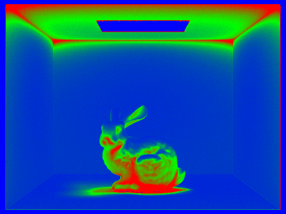
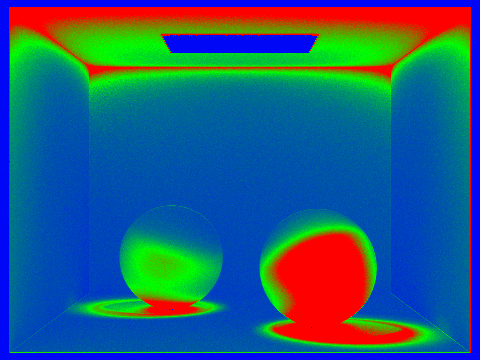
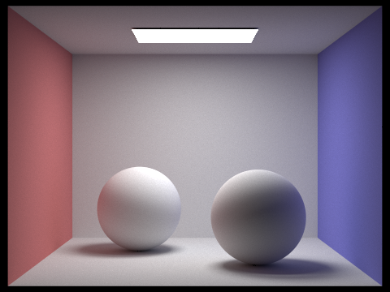
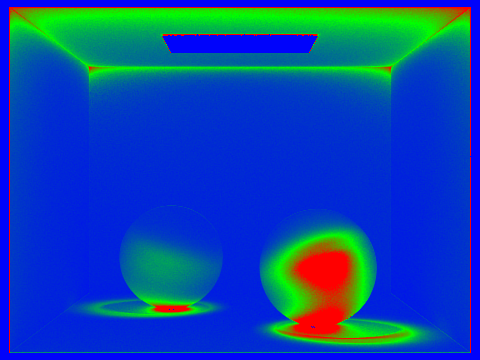
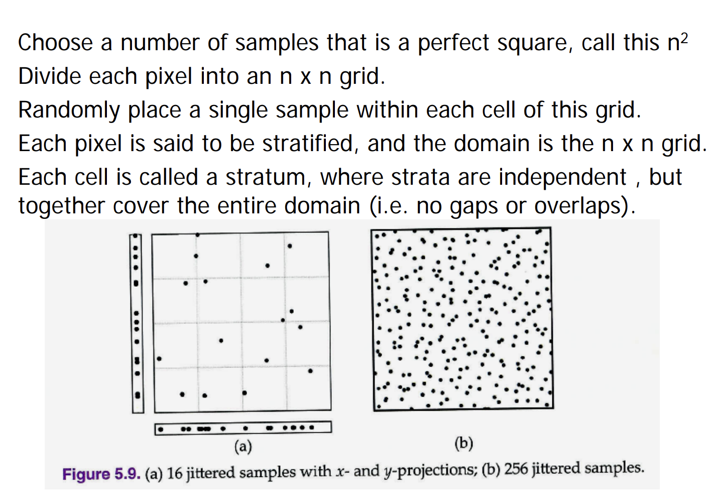
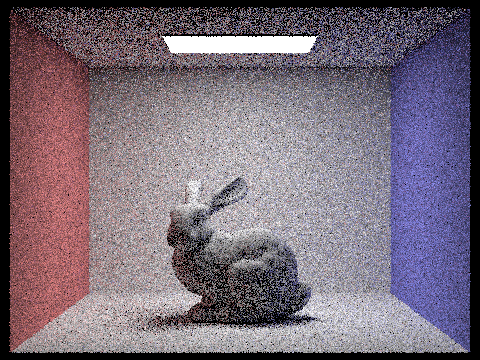
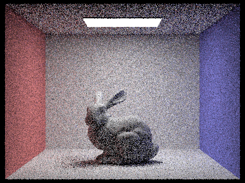
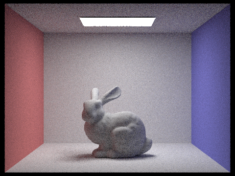

CS184/284A Spring 2025 Homework 3 Write-Up
Name: Hetvi Patel
Link to webpage: https://cal-cs184-student.github.io/hw-webpages-hetvi15986/hw3/index.html Link to GitHub repository: https://github.com/cal-cs184-student/hw3-pathtracer-hjp

Part 5: Adaptive Sampling
Adaptive sampling allows us to dynamically determine the number of samples a pixel should be allocated based on a determination of that pixel's noisiness. If a pixel has already converged or is determined to have lower variance, use less samples [e.g. wall, flat surfaces]. Otherwise, add more samples for pixels who are noisier or are determined to have higher variance [e.g. boundaries, complex surfaces]. As a result, more efficient sampling is used across the render, resulting in better image quality due to higher sampling of noisy pixels and less wasted sampled on converged pixels, resulting less computational cost for high quality images.
I implemented this in
raytrace_pixel. I accumulate illuminance data as well as the radiance when taking samples for a certain pixel. Each sample has an illuminance caluclates and a running sum of s1 and s2– the sum of illuminances and the sum of squared illuminances respectively, that allow us to quickly calculate mean mu and variance sigma_sq immediately. mu = s1/n sigma_sq = (1 / (n-1)) * (s2 - (s1*s1) / n). For every
samplesPerBatch = 64 samples, the 95% confidence interval is calculated by multiplying by the z-score = 1.96. I = 1.96 * sqrt(sigma_sq / n) If
I ≤ maxTolerance * mu = 0.05 * mu , the determination is that the pixel has converged and no more samples are taken. Until this point, samples are continued to be taken. The final pixel color is also normalized by number of samples used, as well Results
- l = 1 sample per light , - m = 5 for max ray depth.Bunny
|
4096 
|
4096 Rate 
|
|
8192 |
8192 Rate  |
Spheres
|
4096 |
4096 Rate  |
|
8192  |
8192 Rate  |
These results show the lower (blue) samples per pixel in the rate images for the less noisy–which are likely to be near walls, flat surfaces, and the light sources. It also shows the higher (red) samples per pixel for the noisier pixels, which are closer to boundaries and shadowed areas. The adaptive sampling implementation's resulting images have better image quality in for the same number of samples per pixel, as more samples are allocated to the noisier pixels rather than being wasted on converged pixels.
(Optional) Part 6: Extra Credit Opportunities
Challenge Level 1: a more sophisticated pixel sampler that generates jittered samples.
For this extension, I implemented a jittered 2D sampler to replace the simple uniform grid sampler. I used the following slides as reference.
n by n grid, put one sample randomly in each cell. For ns_aa samples, I used n = sqrt(ns_aa) grid. Each cell contributes a sample at ((i+random)/n, (j+random)/n). This guarantees that samples are more evenly spread across the pixel being samples, reducing clumping and correlations that result in noise and aliasing in uniform random sampling.
|
Jittered s = 1  |
Random s = 1  |
|
Jittered s = 4 |
Random s = 4 |
|
Jittered s = 16 |
Random s = 16  |
Clearly, with higher samples per pixel, the jittered sampling results in better image quality with less noise and aliasing compared to the random sampling. The jittered sampling has more even distribution of samples across the pixel – resulting in smoother results, especially in areas with high contrast or fine details.
Challenge Level 1: surface area heuristic (SAH) for splitting BVH.
Rather than splitting primitives at the median along the axis corresponding to the largest extent (longest axis), SAH evaluates the cost of every split across all of the axes and chooses the axis that minimizes the expected work. For each axis, the bbox is divided into 12 equal bins along this axis and the primitives are assigned to a bin by its centroid’s positionThen, every split point between adjacent bins is used to calculate the cost of the split using each bounding box’s surface area. This estimate cost reflects how likely it is a ray will hit a child, since higher Surface Area means higher places a ray can hit. The axis and bins are chosen according to the lowest cost. This metric is able to partition the scene better, resulting in faster runtimes. The scenes are the same (shown by the dragon below), but runtimes are drastically faster when using SAH instead of naive median splitting.|
Naive: Median Splitting |
Optimized: SAH Splitting |
Naive Median vs Optimized SAH Splitting: Runtime Comparison
| Scene | Median Split Runtime (minutes) | SAH Split Runtime (minutes) | Speedup Factor |
|---|---|---|---|
| CBlucy.dae | 3:20 | 1:21 | 2.47x |
| CBbunny.dae | 1:57 | 1:31 | 1.29x |
| dragon.dae | 0:47 | 0:30 | 1.52x |
Clearly, the optiized SAH Splitting results in significantly faster runtimes across all scenes, with the most significant speedup observed in the CBlucy.dae scene. This demonstrates the effectiveness of SAH in improving the efficiency of BVH construction and ray tracing performance, espcially in scenes with complex geometry and high triangle counts such as CBlucy.dae, where the benefits of better partitioning are more pronounced.
Challenge Level 2: denoising through bilateral blurring
I implemented post-processing denoising via a bilateral filter inbilateral_filter. The filter is applied to the entire sampleBuffer after rendering. A bilateral filter preserves edges yet smoothes the image, as well as weighting by color. For each pixel, I calculate the weighted average over pixels in a radius, where each of these pixels has a weight: neighbor's weight is: weight = exp(–spatial_dist**2 / (2 * sigma_s**2)) * exp(-color_dist**2 / (2 * sigma_c**2))The
-s 32 where the image has more coherent structure but clearly has Monte Carlo noise. I used parameters: sigma_s = 5.0 and sigma_c = 0.05 (tuned for CBbunny.dae): maximize smoothing in flat regions while keeping shadow edges and boundaries sharp.
| Denoised | Noisy |
|---|---|
|
s = 32 |
s = 32 |
The End